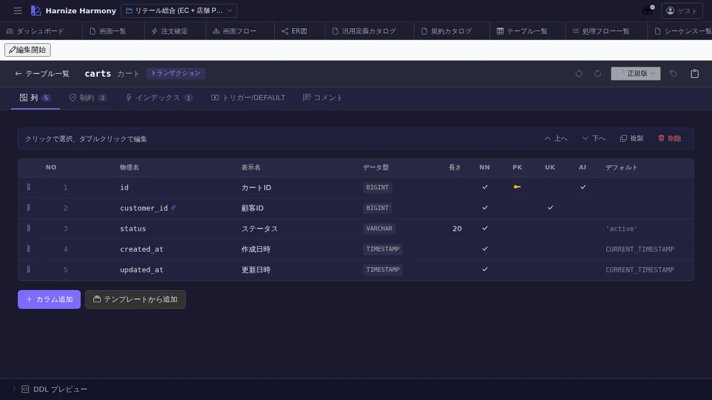

テーブル定義編集
対象画面:
TableEditor(frontend/src/components/table/TableEditor.tsx) ルート:/w/:wsId/table/edit/:tableId種別: マルチインスタンスタブ
概要
テーブル (Table) の カラム定義 / インデックス / 外部キー / 制約 を編集する。DDL 生成 (/generate-code) / ER 図 (/table/er) の入力となる中核画面。一覧 UI 共通仕様準拠で、カラムも useListSort / useListFilter / 並び替え可能。
到達経路
- テーブル一覧 (
/table/list) → カード / 行クリック - ER 図 (
/table/er) → エンティティクリック (将来) - 直接 URL:
/w/<wsId>/table/edit/<tableId>
画面構成

主要エリア
- EditorHeader — テーブル名 + id 変更 + 保存 + 編集モード
- メタ情報 — 名前 / 物理名 / 説明 / 成熟度
- カラム一覧 (
DataList) — 列: 順番 / 物理名 / 論理名 / 型 / NULL 可 / デフォルト / PK / FK / index / 説明 - 外部キー / インデックス タブ (折りたたみ)
- 検証状態 — schema 違反 / 未参照 / 命名規約違反
主要操作
| 操作 | 手段 | 結果 |
|---|---|---|
| カラム追加 | 「カラム追加」 | 末尾に新規行、inline 編集 |
| カラム編集 | 行のセルクリック | inline 編集モード |
| FK 追加 | 「外部キー」タブ → 「追加」 | 参照テーブル / カラム選択 |
| Index 追加 | 「インデックス」タブ → 「追加」 | 対象カラム / unique / 名前を指定 |
| カラム並び替え | 行ドラッグ | renumber |
| カラム削除 | 行右クリック → 「削除」 / Delete | 参照ありは警告 |
| rename refactor | 右クリック → 「ID 変更…」 / F2 | RenameEntityDialog |
| 保存 / 破棄 | Ctrl+S / 「破棄」 | edit-session 経由 |
データ前提
- 空状態: カラム 0 件、最低 1 カラム (主キー) を入れた時点で意味を持つ
- 意味のある状態: retail の
cartテーブルはid(PK) /customer_id(FK) /created_at/updated_at等
関連仕様書
docs/spec/list-common.md— カラム一覧の共通 UIdocs/spec/schema-design-principles.md— テーブル / カラム命名規約
関連 skill
/generate-code— DDL / migration / repository を techStack に従い生成- (将来)
/review-table— テーブル定義の品質レビュー
既知の制約・注意
- 物理名と論理名は別管理。
generate-codeは physical name、UI は logical name 表示 - 大規模テーブル (100+ カラム) でも仮想スクロール対応済
- FK 削除時の波及 (parent 側の cascade) は 手動指定 (ON DELETE CASCADE 等)